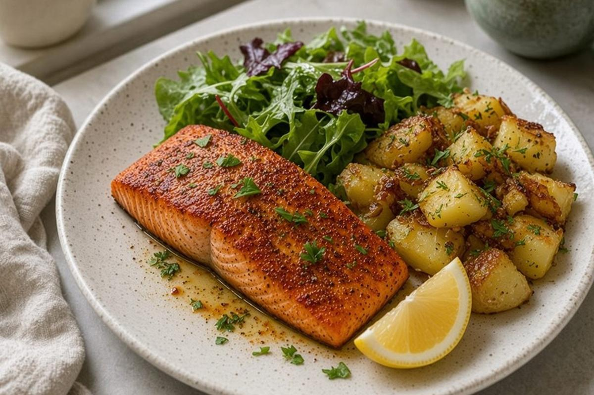

Wed 25 Nov
Harissa salmon
Harissa salmon with crushed potatoes
30 min
Jude: Cut Jude's piece of salmon and bake it plain, before the harissa.
Harissa salmon with crushed potatoes
30 min · Serves 2 + Jude
QuickJude's plate3 for £10
north-african · fish · quick · low
What it cost
Salmon fillets 220 g £3.26 (3 for £10)
Jude, before step 3: Cut Jude's piece of salmon and bake it plain, before the harissa.
Ingredients
For this sitting
After his portion
Method
-
Jude: Cut Jude's piece of salmon and bake it plain, before the harissa.
Jude's plate
Jude: Plain salmon, skin off and every bone checked, flaked into plain crushed potato with a little yoghurt or milk. No harissa and no pepper.
Check every bone.
Keeping it: Eat the same night. Do not refreeze salmon that has been defrosted.
For the cookbook
A note for next time. It does not change the method above.